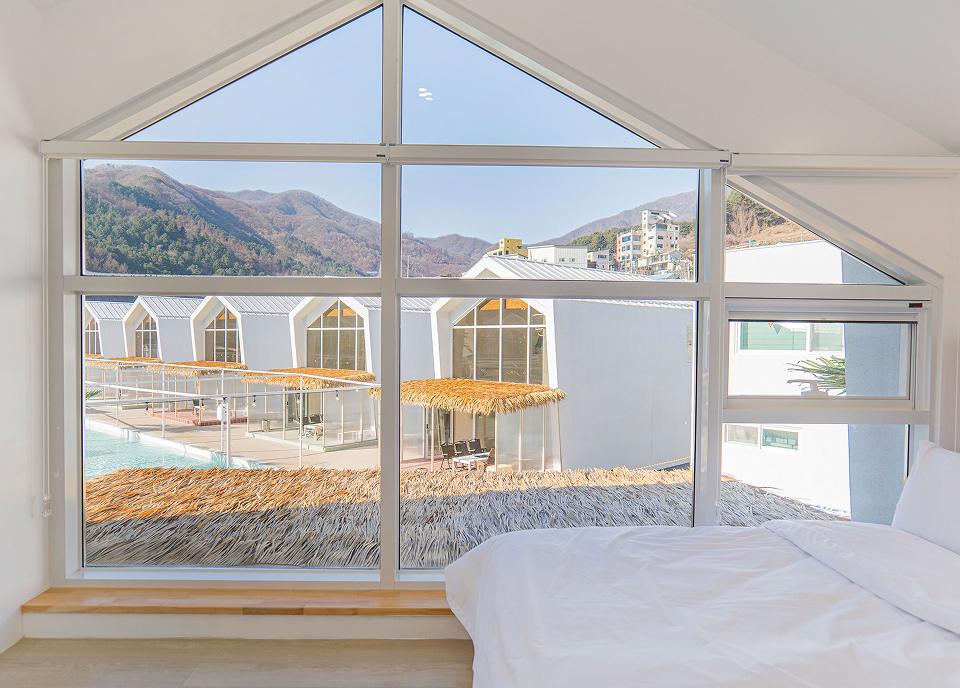

Welcome to
SANGREEN
저희 산그린 펜션은 운악산 인근에 위치하고 있어,
수려하고 공기좋은 운악산의 자연환경 속에서
휴식과 낭만을 즐길실 수 있습니다.
사랑하는 연인,가족,친구와 함께 특별한 아름다움과
완벽한 휴식,자유로움을 선물하겠습니다.
Welcome to
SANGREEN
 경춘선 대성리역 → 대성리역 버스 정류장 → 1330-44 현등사행 좌석버스 탑승 →
운악산·현등사입구 정류장 하차 → 산그린펜션까지 도보 8분
경춘선 대성리역 → 대성리역 버스 정류장 → 1330-44 현등사행 좌석버스 탑승 →
운악산·현등사입구 정류장 하차 → 산그린펜션까지 도보 8분